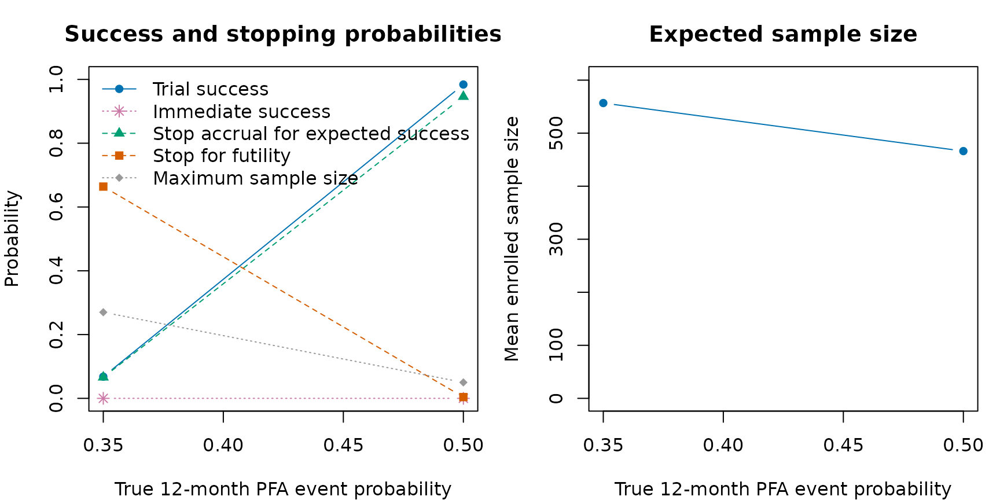
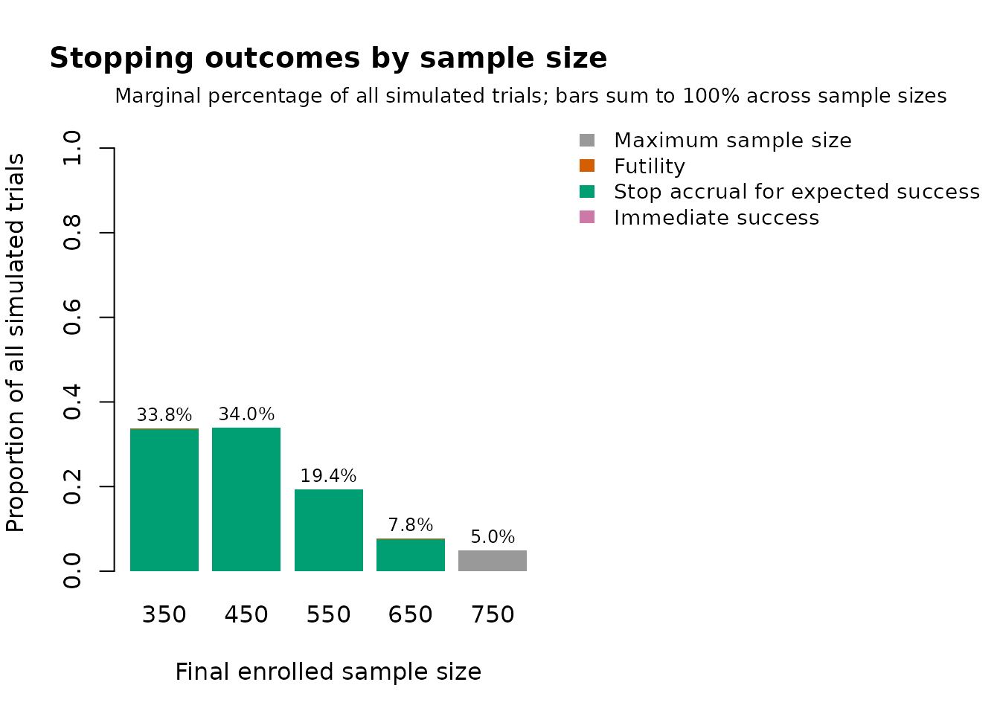
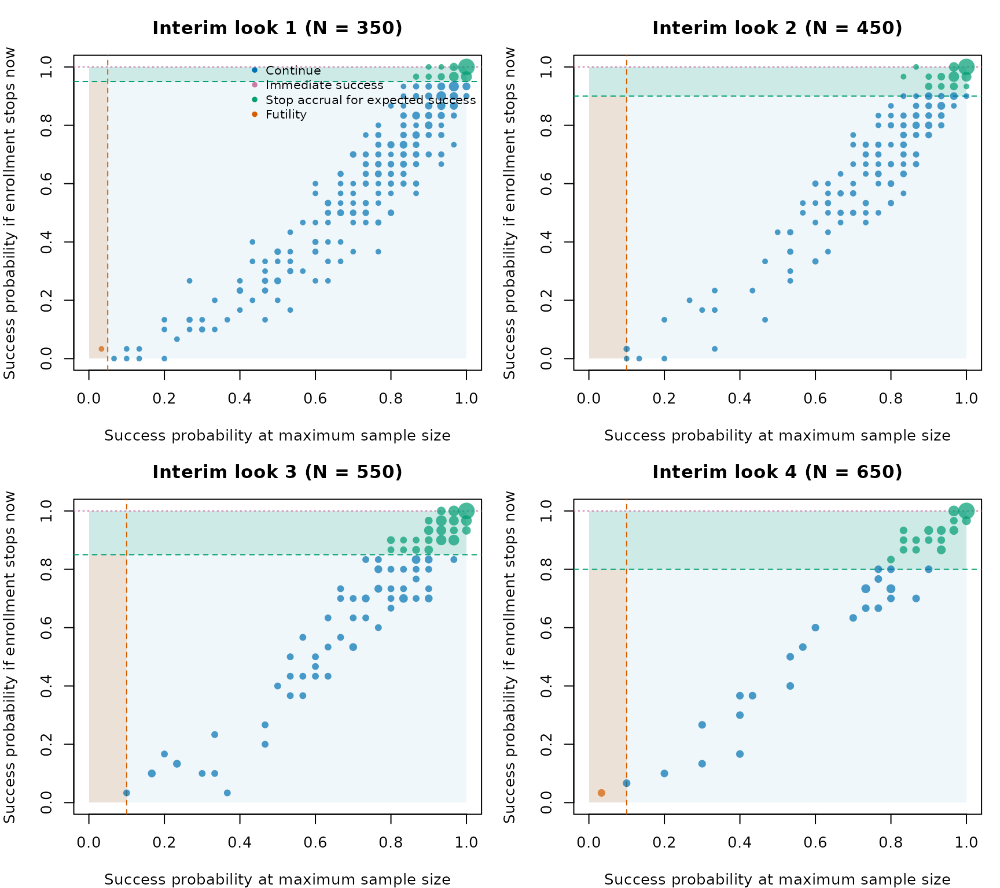

The ADVENT trial is a useful published example of a Goldilocks adaptive sample size design. ADVENT compared pulsed field ablation (PFA) with conventional thermal ablation for patients with drug-resistant paroxysmal atrial fibrillation. It was registered as NCT04612244, its design was published in Heart Rhythm O2 (Reddy et al., 2023), and its primary results were published in The New England Journal of Medicine (Reddy et al., 2023).
The design paper states that the sample size was determined adaptively using a Goldilocks design, citing Broglio et al. (2014). The ADVENT statistical analysis plan (SAP) clarifies that the possible sizes of the modified intent-to-treat (mITT) effectiveness population were 350, 450, 550, 650, and 750. At each enrollment milestone, the trial calculated the predictive probability that the trial would eventually show noninferiority for both primary endpoints. The trial could then stop enrollment for predicted success, stop for futility, or continue to the next milestone.
This vignette uses ADVENT as a worked example for
goldilocks. It focuses on how the published design maps to
package arguments. The goal is not to recreate the sponsor’s full
statistical analysis plan exactly. Some details, including
site-stratified randomization, analysis-population exclusions,
subject-linked missingness, and the joint co-primary endpoint stopping
rule, are simplified here.
Trial overview
ADVENT was a multicenter, prospective, single-blind, randomized controlled noninferiority trial. Randomized subjects were assigned 1:1 to PFA or standard-of-care thermal ablation, where the thermal arm used either radiofrequency ablation or cryoballoon ablation depending on site. The first 1 to 3 subjects at each site were nonrandomized roll-in subjects and are not part of the randomized comparison modeled below.
| Feature | Reported ADVENT design |
|---|---|
| Population | Drug-resistant paroxysmal atrial fibrillation |
| Treatment arm | Pulsed field ablation |
| Control arm | Thermal ablation by radiofrequency or cryoballoon ablation |
| Randomization | 1:1 after nonrandomized roll-in subjects |
| Follow-up | 12 months |
| Adaptive sample sizes | 350, 450, 550, 650, or 750 mITT subjects |
| Primary effectiveness endpoint | Treatment success: acute procedural success and freedom from specified chronic failures through 12 months |
| Primary safety endpoint | Composite device- or procedure-related serious adverse events, including selected acute and chronic events |
The final published randomized cohort included 305 subjects assigned to PFA and 302 assigned to thermal ablation. In the primary results paper, PFA was noninferior to thermal ablation for both primary effectiveness and primary safety.
The published design also included a trial-flow figure. The following diagram recreates the parts of that flow that matter for the package mapping.
In the code below, roll-in subjects and randomized subjects excluded from the analysis population are ignored. The simulation starts directly with the modeled 1:1 analysis population.
The Goldilocks flow
The ADVENT design paper includes a flowchart for the adaptive sample size algorithm. The chart below recreates the logic in package terms rather than copying the published image.
The corresponding goldilocks arguments are:
N_total <- 750
interim_look <- c(350, 450, 550, 650)
Sn <- c(0.95, 0.90, 0.85, 0.80)
Fn <- c(0.05, 0.10, 0.10, 0.10)The mapping is direct:
-
N_total = 750is the maximum modeled mITT analysis-population size. -
interim_look = c(350, 450, 550, 650)supplies the mITT accrual milestones at which the Goldilocks decision rule is evaluated. The maximum sample size is not included ininterim_look. -
Sncontains the published predicted-success thresholds for sample sizes 350, 450, 550, and 650. -
Fncontains the published futility thresholds for the same looks.
ADVENT required the predictive probability rule to be favorable for
both co-primary endpoints before enrollment stopped for predicted
success, and unfavorable for either endpoint before stopping for
futility. The current survival_adapt() interface models one
endpoint per run. In this vignette we therefore run the effectiveness
and safety endpoints separately, then explain how those separate
endpoint-specific runs relate to the reported co-primary design.
The SAP allowed up to 900 enrolled subjects to obtain 750 mITT subjects: up to 750 mITT subjects, 105 nonrandomized roll-in subjects, and 45 randomized subjects who did not enter the mITT population. The package examples below start directly with the analysis population and do not simulate roll-ins or post-randomization exclusions.
Endpoint scale
ADVENT reported the primary effectiveness endpoint as treatment
success at 12 months. The beta-binomial method in
goldilocks is parameterized on the binary event
probability. For the effectiveness endpoint we therefore code the event
as failure by 12 months:
The design paper reports a target scenario with 65% treatment success in each arm. On the event scale used in the code, that corresponds to a 35% failure probability in each arm.
For the safety endpoint, the event is already an adverse event. The target scenario was an 8% primary safety event rate in each arm.
| Endpoint | Published scale | Code event | Target event probability | Noninferiority margin | Posterior threshold |
|---|---|---|---|---|---|
| Effectiveness | Treatment success by 12 months | Failure to meet treatment success | 0.35 | 0.15 | 0.956 |
| Safety | Primary safety event by 12 months | Primary safety event | 0.08 | 0.08 | 0.966 |
The ADVENT primary analyses used Bayesian beta-binomial endpoint
models with noninformative
priors. In goldilocks, this is specified with:
bin_prior <- c(0.5, 0.5)The prior argument still appears in the code below
because survival_adapt() uses a time-to-event model to
impute not-yet-observed outcomes at interim looks. That imputation model
uses a Gamma prior on piecewise-exponential hazards. The ADVENT SAP
specifies a noninformative
shape-rate prior for most of those hazards. We use those reported
hyperparameters here rather than the package default. Because the SAP
expresses the corresponding risk sets and exposure in patient-days,
every time supplied to goldilocks below is expressed in
days:
prior <- c(0.5, 0.001)That distinction is important: bin_prior is the
ADVENT-aligned endpoint prior, whereas prior controls the
package’s predictive imputation model.
The effectiveness model in the SAP needs one further qualification.
It partitions follow-up at days 90, 104, 150, and 210. For interim
sample-size prediction, the first four interval hazards use
priors, but the 210–360-day hazard uses an informative
prior because little late follow-up was expected at the interim
assessments. The final multiple-imputation analysis returns to
for every interval. The current goldilocks interface
applies one shared Gamma prior to every interval and uses it for both
interim prediction and final imputation, so the special 210–360-day
prior is not yet available in the package. We therefore use
throughout this endpoint-specific illustration.
Later follow-up intervals can have no exposure at an early look. The
SAP’s conjugate model then leaves the corresponding hazard governed by
its prior. The package’s historical default instead propagates
sufficient statistics from a neighboring interval, so the examples
explicitly set empty_interval = "prior".
The SAP reports completed datasets for its predictive-probability and multiple-imputation calculations. The evaluated parts of this vignette deliberately use fewer imputations: 50 for the worked single trials and 30 for the operating-characteristic example. We do not use in evaluated code in order to keep vignette computation time to a minimum. The unevaluated fuller template does use to show the ADVENT setting. Consequently, the numerical results shown in the vignette are demonstrations of package workflow rather than reproductions of the ADVENT calibration.
SAP event-time models and time units
The SAP provides the exact default piecewise-exponential generators
used in its operating-characteristic simulations. Because their hazards
are expressed per patient-day and their Gamma prior rates use
patient-day exposure, this vignette uses days as the single
numeric time unit supplied to goldilocks. The SAP
also treats 30 days as one simulation month, so 12 months is represented
as 360 days.
days_per_month <- 30L
follow_up_months <- 12L
end_of_study_day <- follow_up_months * days_per_month
eff_event_cutpoints_day <- c(90, 104, 150, 210)
eff_hazard_per_day <- c(
0.000111670,
0.002197976,
0.003163208,
0.002839089,
0.000494053
)
safety_event_cutpoints_day <- 7
safety_hazard_per_day <- c(0.011137363, 1.53540e-5)
event_free_at_interval_end <- function(hazard, interval_end) {
vapply(seq_along(hazard), function(j) {
cutpoints <- if (j == 1L) NULL else interval_end[seq_len(j - 1L)]
post <- array(hazard[seq_len(j)], dim = c(1L, j, 1L))
1 - goldilocks:::haz_to_prop(
post = post,
cutpoints = cutpoints,
end_of_study = interval_end[j],
single_arm = TRUE
)$p_treatment
}, numeric(1))
}
implied_event_free_proportion <- c(
event_free_at_interval_end(
eff_hazard_per_day,
c(eff_event_cutpoints_day, end_of_study_day)
),
event_free_at_interval_end(
safety_hazard_per_day,
c(safety_event_cutpoints_day, end_of_study_day)
)
)
hazard_table <- data.frame(
Endpoint = c(rep("Effectiveness failure", 5), rep("Safety event", 2)),
`Follow-up interval (days)` = c(
"0--<90", "90--<104", "104--<150", "150--<210",
"210--360", "0--<7", "7--360"
),
`Hazard per patient-day` = c(
eff_hazard_per_day,
safety_hazard_per_day
),
`Implied event-free proportion at interval end` =
implied_event_free_proportion,
check.names = FALSE
)
knitr::kable(hazard_table, digits = c(9, 3))| Endpoint | Follow-up interval (days) | Hazard per patient-day | Implied event-free proportion at interval end |
|---|---|---|---|
| Effectiveness failure | 0–<90 | 0.000111670 | 0.990 |
| Effectiveness failure | 90–<104 | 0.002197976 | 0.960 |
| Effectiveness failure | 104–<150 | 0.003163208 | 0.830 |
| Effectiveness failure | 150–<210 | 0.002839089 | 0.700 |
| Effectiveness failure | 210–360 | 0.000494053 | 0.650 |
| Safety event | 0–<7 | 0.011137363 | 0.925 |
| Safety event | 7–360 | 0.000015354 | 0.920 |
The less-than sign marks the exclusive upper boundary of each nonfinal interval; the final interval includes the administrative endpoint at day 360. This notation makes clear that adjacent windows do not overlap. Because event time is continuous, assigning an exact cut-point to the interval on its left or right would not change the model probability.
The following calculation verifies the two final binary event probabilities used by the vignette:
prob_check <- data.frame(
Endpoint = c("Effectiveness failure", "Safety event"),
`SAP target event probability at day 360` = c(0.35, 0.08),
`Calculated event probability at day 360` = c(
ppwe(
hazard = matrix(eff_hazard_per_day, nrow = 1),
end_of_study = end_of_study_day,
cutpoints = eff_event_cutpoints_day
),
ppwe(
hazard = matrix(safety_hazard_per_day, nrow = 1),
end_of_study = end_of_study_day,
cutpoints = safety_event_cutpoints_day
)
),
check.names = FALSE
)
knitr::kable(prob_check, digits = 6)| Endpoint | SAP target event probability at day 360 | Calculated event probability at day 360 |
|---|---|---|
| Effectiveness failure | 0.35 | 0.35 |
| Safety event | 0.08 | 0.08 |
For a piecewise-exponential model with interval hazards and interval lengths , the cumulative hazard through day 360 is
and the implied day-360 event probability is
To obtain a target event probability while retaining the relative height of every piece, multiply each hazard by
When the treatment hazard vector is obtained by scaling the control vector this way, the hazard ratio is the same constant in every interval. Thus, the operation preserves the piecewise shape and imposes proportional hazards in data generation. We use it for the noninferiority-boundary examples below:
scale_pwe_to_event_probability <- function(
hazard_per_day,
cutpoints_day,
end_day,
target_event_probability
) {
interval_length_day <- diff(c(0, cutpoints_day, end_day))
cumulative_hazard <- sum(hazard_per_day * interval_length_day)
scale <- -log1p(-target_event_probability) / cumulative_hazard
hazard_per_day * scale
}
eff_margin_hazard_per_day <- scale_pwe_to_event_probability(
eff_hazard_per_day,
eff_event_cutpoints_day,
end_of_study_day,
target_event_probability = 0.50
)
safety_margin_hazard_per_day <- scale_pwe_to_event_probability(
safety_hazard_per_day,
safety_event_cutpoints_day,
end_of_study_day,
target_event_probability = 0.16
)Two time clocks remain conceptually distinct even though both are
represented in days. Event cut-points are subject-relative follow-up
times; enrollment-rate change points below are trial-calendar times
measured from first patient in. In addition, the SAP’s event clock
starts on the index-procedure date, whereas goldilocks
starts it at enrollment/randomization. This vignette treats those dates
as coincident and does not model a randomization-to-procedure delay.
Effectiveness endpoint
For the effectiveness endpoint, success in the code means:
This matches the reported 15 percentage point absolute noninferiority
margin for treatment success, after translating success into failure. A
lower failure probability is better, so we use
alternative = "less".
ADVENT used 1:1 randomization stratified by site. The design paper
reports randomly varying permuted block sizes, but the SAP does not
provide the block sizes or the randomization-generation algorithm. The
package can generate blocked 1:1 randomization, but it does not model
site-level stratification or randomly varying block sizes. Here
block = 2 and rand_ratio = c(1, 1) retain
simple 1:1 balance; they do not reproduce the trial’s full randomization
scheme.
The SAP explicitly designates 5% of subjects as lost to follow-up for
safety and 7.5% for effectiveness: the same 5% plus another 2.5% who may
be unassessable for effectiveness while remaining assessable for safety.
SAP dropout times are uniform over days 0–360, and an event remains
observed when it precedes dropout. The package’s prop_loss
mechanism is similar but not identical: every selected subject is
censored at a uniformly generated time before their potential event or
administrative censoring time. Separate endpoint runs also cannot
preserve the SAP’s shared subject-level 5% plus nested 2.5%
relationship. We therefore use 0.075 and 0.05 to map the SAP’s
designated fractions, not to claim exact reproduction
of its censoring process. The subsequently observed proportion not
completing follow-up was approximately 0.04, which is close to 0.05, but
that post-trial quantity is not the design input and need not equal
endpoint-specific missingness.
The SAP reports the expected accrual schedule in subjects per month:
2, 5, 10, 15, 20, 25, and 30 during months 1–7, then 33 per month from
month 8 onward. Accrual is into the primary analysis population. The
source rates remain visibly labeled per month below, but they are
divided by 30 exactly once before being supplied to
goldilocks. Likewise, the calendar-month change points are
converted once to days since first patient in. The SAP does not describe
its individual arrival-time generator; goldilocks uses
these rates in a continuous-time Poisson enrollment process with first
patient in fixed at calendar day 0.
enrollment_rate_per_month <- c(2, 5, 10, 15, 20, 25, 30, 33)
enrollment_rate_change_month <- 1:7
enrollment_rate_per_day <- enrollment_rate_per_month / days_per_month
enrollment_rate_change_day <-
enrollment_rate_change_month * days_per_month
effectiveness_prop_loss <- 0.075
safety_prop_loss <- 0.05
enrollment_schedule <- data.frame(
`Trial-calendar interval (months)` = c(
paste("Month", 1:7),
"Month 8 onward"
),
`Trial-calendar interval (days since first patient in)` = c(
paste0(
(0:6) * days_per_month,
"--<",
(1:7) * days_per_month
),
paste0(7 * days_per_month, " onward")
),
`SAP rate (subjects/month)` = enrollment_rate_per_month,
`Rate supplied to goldilocks (subjects/day)` = enrollment_rate_per_day,
check.names = FALSE
)
knitr::kable(enrollment_schedule, digits = 4)| Trial-calendar interval (months) | Trial-calendar interval (days since first patient in) | SAP rate (subjects/month) | Rate supplied to goldilocks (subjects/day) |
|---|---|---|---|
| Month 1 | 0–<30 | 2 | 0.0667 |
| Month 2 | 30–<60 | 5 | 0.1667 |
| Month 3 | 60–<90 | 10 | 0.3333 |
| Month 4 | 90–<120 | 15 | 0.5000 |
| Month 5 | 120–<150 | 20 | 0.6667 |
| Month 6 | 150–<180 | 25 | 0.8333 |
| Month 7 | 180–<210 | 30 | 1.0000 |
| Month 8 onward | 210 onward | 33 | 1.1000 |
Thus, for example, trial-calendar day 210 is the beginning of month 8 and the 33-subject/month rate. It is unrelated to the effectiveness endpoint’s subject-relative cut-point at follow-up day 210. The 360-day follow-up horizon is also per subject, not the total duration of the trial. Accrual speed remains worth sensitivity checking: faster accrual reduces the amount of observed endpoint information available at interim looks.
The following survival_adapt() call simulates and
analyzes the effectiveness endpoint for one simulated
trial. It does not estimate operating characteristics over
multiple trials.
set.seed(4601)
# One simulated effectiveness-endpoint trial
advent_effectiveness <- survival_adapt(
hazard_treatment = eff_hazard_per_day,
hazard_control = eff_hazard_per_day,
cutpoints = eff_event_cutpoints_day,
N_total = N_total,
lambda = enrollment_rate_per_day,
lambda_time = enrollment_rate_change_day,
interim_look = interim_look,
end_of_study = end_of_study_day,
prior = prior,
bin_prior = bin_prior,
bin_method = "quadrature",
block = 2,
rand_ratio = c(1, 1),
prop_loss = effectiveness_prop_loss,
alternative = "less",
h0 = 0.15,
Fn = Fn,
Sn = Sn,
prob_ha = 0.956,
N_impute = 50,
empty_interval = "prior",
method = "bayes-bin",
imputed_final = TRUE
)
advent_effectiveness
#> prob_threshold margin alternative N_treatment N_control N_enrolled N_max
#> 1 0.956 0.15 less 225 225 450 750
#> post_prob_ha est_final ppp_success stop_futility stop_expected_success
#> 1 0.9994649 -0.0007079646 0.98 0 1The most important columns are:
-
N_enrolled: the selected sample size for this simulated trial. -
stop_expected_success: whether enrollment stopped because the current sample size appeared adequate. -
stop_futility: whether enrollment stopped because success looked unlikely even at the maximum sample size. -
est_final: the posterior mean of . -
post_prob_ha: the final posterior probability that the binary endpoint effect is below the noninferiority margin.
Safety endpoint
The safety endpoint uses the same Goldilocks sample-size rule, but changes the event probability, margin, and posterior probability threshold. Success in the code means:
This survival_adapt() call likewise represents
one simulated trial for the safety endpoint.
set.seed(4602)
# One simulated safety-endpoint trial
advent_safety <- survival_adapt(
hazard_treatment = safety_hazard_per_day,
hazard_control = safety_hazard_per_day,
cutpoints = safety_event_cutpoints_day,
N_total = N_total,
lambda = enrollment_rate_per_day,
lambda_time = enrollment_rate_change_day,
interim_look = interim_look,
end_of_study = end_of_study_day,
prior = prior,
bin_prior = bin_prior,
bin_method = "quadrature",
block = 2,
rand_ratio = c(1, 1),
prop_loss = safety_prop_loss,
alternative = "less",
h0 = 0.08,
Fn = Fn,
Sn = Sn,
prob_ha = 0.966,
N_impute = 50,
empty_interval = "prior",
method = "bayes-bin",
imputed_final = TRUE
)
advent_safety
#> prob_threshold margin alternative N_treatment N_control N_enrolled N_max
#> 1 0.966 0.08 less 325 325 650 750
#> post_prob_ha est_final ppp_success stop_futility stop_expected_success
#> 1 0.9988901 0.01815951 1 0 1In the published ADVENT design, a predicted-success stopping
recommendation required high predictive probability for both endpoints.
A futility recommendation could be triggered by low predictive
probability for either endpoint. The two separate simulations above do
not impose that joint rule. Instead, they show how each
endpoint-specific Bayesian rule maps to
survival_adapt().
A compact design object
For simulations, it is helpful to collect the settings that genuinely are common and then add endpoint-specific cut-points and designated missingness fractions. Keeping those endpoint-specific arguments out of the common object prevents an effectiveness setting from being reused accidentally for safety, or vice versa.
advent_common <- list(
N_total = N_total,
lambda = enrollment_rate_per_day,
lambda_time = enrollment_rate_change_day,
interim_look = interim_look,
end_of_study = end_of_study_day,
prior = prior,
bin_prior = bin_prior,
bin_method = "quadrature",
block = 2,
rand_ratio = c(1, 1),
alternative = "less",
Fn = Fn,
Sn = Sn,
N_impute = 30,
empty_interval = "prior",
method = "bayes-bin",
imputed_final = TRUE,
ncores = 2
)
advent_effectiveness_args <- modifyList(advent_common, list(
cutpoints = eff_event_cutpoints_day,
prop_loss = effectiveness_prop_loss
))
advent_safety_args <- modifyList(advent_common, list(
cutpoints = safety_event_cutpoints_day,
prop_loss = safety_prop_loss
))
advent_effectiveness_args
#> $N_total
#> [1] 750
#>
#> $lambda
#> [1] 0.06666667 0.16666667 0.33333333 0.50000000 0.66666667 0.83333333 1.00000000
#> [8] 1.10000000
#>
#> $lambda_time
#> [1] 30 60 90 120 150 180 210
#>
#> $interim_look
#> [1] 350 450 550 650
#>
#> $end_of_study
#> [1] 360
#>
#> $prior
#> [1] 0.500 0.001
#>
#> $bin_prior
#> [1] 0.5 0.5
#>
#> $bin_method
#> [1] "quadrature"
#>
#> $block
#> [1] 2
#>
#> $rand_ratio
#> [1] 1 1
#>
#> $alternative
#> [1] "less"
#>
#> $Fn
#> [1] 0.05 0.10 0.10 0.10
#>
#> $Sn
#> [1] 0.95 0.90 0.85 0.80
#>
#> $N_impute
#> [1] 30
#>
#> $empty_interval
#> [1] "prior"
#>
#> $method
#> [1] "bayes-bin"
#>
#> $imputed_final
#> [1] TRUE
#>
#> $ncores
#> [1] 2
#>
#> $cutpoints
#> [1] 90 104 150 210
#>
#> $prop_loss
#> [1] 0.075Then the endpoint-specific simulation calls become short:
set.seed(4610)
eff_target <- do.call(sim_trials, c(
advent_effectiveness_args,
list(
N_trials = 500,
hazard_treatment = eff_hazard_per_day,
hazard_control = eff_hazard_per_day,
h0 = 0.15,
prob_ha = 0.956,
return_trace = TRUE,
seed = 4610
)
))
eff_null_boundary <- do.call(sim_trials, c(
advent_effectiveness_args,
list(
N_trials = 500,
hazard_treatment = eff_margin_hazard_per_day,
hazard_control = eff_hazard_per_day,
h0 = 0.15,
prob_ha = 0.956,
seed = 4611
)
))
oc_small <- summarise_sims(list(
"target: equal 35% failure" = eff_target$sims,
"margin: PFA failure 50%" = eff_null_boundary$sims
))
knitr::kable(oc_small, digits = 3)| scenario | power | stop_success | stop_futility | stop_max_N | mean_N | sd_N | stop_and_fail |
|---|---|---|---|---|---|---|---|
| margin: PFA failure 50% | 0.064 | 0.064 | 0.644 | 0.292 | 556.8 | 151.789 | 0.040 |
| target: equal 35% failure | 0.976 | 0.940 | 0.010 | 0.050 | 481.8 | 112.223 | 0.012 |
Each scenario uses 500 simulated trials and two cores. This remains a
workflow demonstration rather than a definitive estimate of power or
type I error. For design work, increase N_trials, increase
N_impute, and run sensitivity analyses over accrual speed,
loss to follow-up, event rates, and the imputation hazard model.
Visualizing the simulated design
The plotting helpers answer complementary design questions. First,
plot_sim_ocs() compares operating characteristics across
the target and noninferiority-margin scenarios. The true PFA event
probability is supplied as the effect scale.
oc_small$true_pfa_event_probability <- c(0.35, 0.50)
plot_sim_ocs(
oc_small,
effect = "true_pfa_event_probability",
xlab = "True 12-month PFA event probability"
)
Within the target scenario, plot_sim_stopping() shows
how often each sample size is selected and why enrollment stops.
plot_sim_stopping(eff_target)
Because eff_target was simulated with
return_trace = TRUE, its interim decision geometry can also
be inspected. Each displayed panel corresponds to an ADVENT enrollment
milestone reached in at least one simulated trial; larger bubbles
represent predictive-probability pairs reached by more simulated
trials.
plot_sim_decisions(eff_target)
A fuller simulation template
The following code is closer to what one would run outside the vignette build. It is not evaluated here.
advent_effectiveness_full_args <- modifyList(advent_effectiveness_args, list(
N_impute = 5000,
ncores = 8
))
advent_safety_full_args <- modifyList(advent_safety_args, list(
N_impute = 5000,
ncores = 8
))
eff_target_full <- do.call(sim_trials, c(
advent_effectiveness_full_args,
list(
N_trials = 1000,
hazard_treatment = eff_hazard_per_day,
hazard_control = eff_hazard_per_day,
h0 = 0.15,
prob_ha = 0.956,
seed = 4620
)
))
eff_margin_full <- do.call(sim_trials, c(
advent_effectiveness_full_args,
list(
N_trials = 1000,
hazard_treatment = eff_margin_hazard_per_day,
hazard_control = eff_hazard_per_day,
h0 = 0.15,
prob_ha = 0.956,
seed = 4621
)
))
safety_target_full <- do.call(sim_trials, c(
advent_safety_full_args,
list(
N_trials = 1000,
hazard_treatment = safety_hazard_per_day,
hazard_control = safety_hazard_per_day,
h0 = 0.08,
prob_ha = 0.966,
seed = 4622
)
))
safety_margin_full <- do.call(sim_trials, c(
advent_safety_full_args,
list(
N_trials = 1000,
hazard_treatment = safety_margin_hazard_per_day,
hazard_control = safety_hazard_per_day,
h0 = 0.08,
prob_ha = 0.966,
seed = 4623
)
))
summarise_sims(list(
"effectiveness target" = eff_target_full$sims,
"effectiveness margin" = eff_margin_full$sims,
"safety target" = safety_target_full$sims,
"safety margin" = safety_margin_full$sims
))The “margin” scenarios above set the treatment event probability equal to the control event probability plus the noninferiority margin. They are useful for checking false-positive behavior near the design boundary. They are not the only null scenarios worth studying.
SAP sensitivity assumptions and reference benchmarks
The SAP assessed whether operating characteristics were robust to
several alternative assumptions. In goldilocks notation,
these correspond to:
- Varying the day-360 event probability implied by the effectiveness
hazard_controlvector overc(0.40, 0.35, 0.30). These are failure probabilities and therefore correspond to the SAP’s control success probabilities of 0.60, 0.65, and 0.70. The day-360 event probability implied by the safetyhazard_controlvector was varied overc(0.06, 0.08, 0.10). - Supplying a slower
lambdaschedule ofc(2, 5, 10, 10, 15, 15, 20, 25) / 30, withlambda_time = (1:7) * 30, or a faster schedule ofc(5, 10, 20, 25, 30, 40, 50) / 30, withlambda_time = (1:6) * 30. Division by 30 converts the SAP’s subjects/month rates to the subjects/day scale used here. - Using the SAP’s second effectiveness generator with
cutpoints = c(90, 100, 200, 300)and bothhazard_treatmentandhazard_controlset toc(0.000055695, 0.010034797, 0.001690763, 0.000680535, 0.000573122)in its equal-arm target scenario. - Using the SAP’s third effectiveness generator with
cutpoints = c(90, 120)and both hazard arguments set toc(0.000569925, 0.007879626, 0.000596254)in its equal-arm target scenario. - Using the SAP’s second safety generator with
cutpoints = c(7, 180)and both hazard arguments set toc(0.007327613, 0.000122991, 0.0000600610)in its equal-arm target scenario.
The three alternative event-time generators deliberately use
data-generating partitions that differ from the principal analysis
partitions. The current package accepts one cutpoints
vector for both event generation and predictive imputation, so it cannot
reproduce those model-misspecification sensitivities directly. The SAP
also planned an imputation-model sensitivity with six pieces: day 90
followed by five post-90-day intervals containing approximately equal
event counts, potentially with different cut-points by arm. A shared
fixed package cut-point vector cannot reproduce that analysis
either.
The SAP supplies quantitative reference results based on 10,000 simulated trials per scenario and predictive draws or imputations:
| Scenario | Reported probability | Probability meaning | Mean mITT sample size |
|---|---|---|---|
| Target: both endpoints at expected rates | 0.9635 | Joint power | 504 |
| Effectiveness noninferiority boundary | 0.0487 | Effectiveness type I error | 551 |
| Safety noninferiority boundary | 0.0528 | Safety type I error | 457 |
The target row sets the effectiveness hazard_treatment
and hazard_control vectors to imply equal day-360 failure
probabilities of 0.35, and the safety hazard vectors to imply equal
day-360 event probabilities of 0.08; success requires both co-primary
endpoints. At the effectiveness boundary, hazard_treatment
implies a 0.50 failure probability while hazard_control
implies 0.35, and the safety endpoint was assumed always to recommend
stopping for promise and to pass finally. At the safety boundary, the
treatment and control safety hazards imply event probabilities of 0.16
and 0.08, respectively, and effectiveness was treated analogously. These
are external validation targets. The endpoint-separated simulations in
this vignette do not claim to reproduce them.
References
Broglio KR, Connor JT, Berry SM. Not too big, not too small: a Goldilocks approach to sample size selection. Journal of Biopharmaceutical Statistics. 2014;24(3):685-705. doi:10.1080/10543406.2014.888569.
Reddy VY, Gerstenfeld EP, Natale A, et al. A randomized controlled trial of pulsed field ablation versus standard-of-care ablation for paroxysmal atrial fibrillation: The ADVENT trial rationale and design. Heart Rhythm O2. 2023;4(5):317-328. doi:10.1016/j.hroo.2023.03.001.
Reddy VY, Gerstenfeld EP, Natale A, et al. Pulsed field or conventional thermal ablation for paroxysmal atrial fibrillation. New England Journal of Medicine. 2023;389(18):1660-1671. doi:10.1056/NEJMoa2307291.
ClinicalTrials.gov. A prospective randomized pivotal trial of the FARAPULSE pulsed field ablation system compared with standard of care ablation in patients with paroxysmal atrial fibrillation. NCT04612244.
FARAPULSE, Inc. ADVENT Statistical Analysis Plan. CS0935 Rev C. 12 October 2021. Available from the ClinicalTrials.gov document archive.